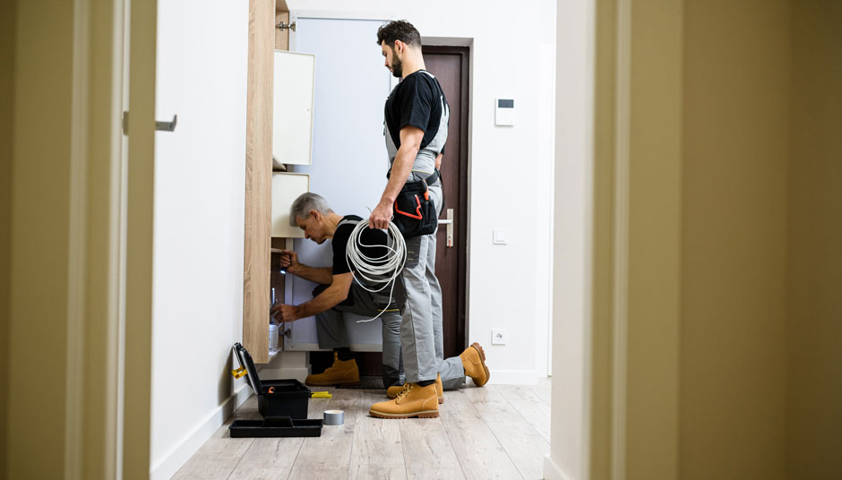
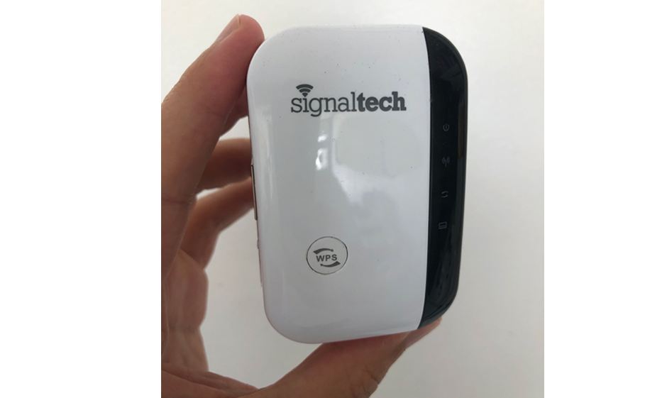

Groundbreaking Device Exposes Greedy Internet Providers While Speeding Up Your Slow Internet
Friday, October 16, 2020 | By Audrey Beck
If you made it to this article it means you are likely connected to your Wi-Fi and are probably getting screwed over.
The only reason I say this is because I uncovered recently that my internet provider has been completely ripping me off for years.
It became obvious after my son and his family had to move across the country for a new job. What made me most sad was that I’d no longer be able to see my grandkids a few times a week. Having lived just a few minutes away from them, I’d pick them up from the bus stop then spend time with them until their mom came home.
Knowing how upset I was, my son bought me a laptop so we could video chat on as often as I wanted so I could see everyone. While this wasn’t the same as seeing them in person, it was the best we could do given the situation. However, the day they moved, we tried to have a video chat and that’s when I knew something was wrong.
My son tried to start a video chat with me on my new laptop (which was in the living room) and when I hit the answer button, I could hear my family but I couldn’t see them. I kept getting an error on the screen stating “video will not work due to bad internet connection”. My son suggested bringing the laptop to another room in my house (my bedroom), but I kept getting the same error.
And it wasn’t just in my living or bedroom, every room in my house had the same issue.
This situation with the internet had to change. Ever since my husband had passed away, I vowed to spend as much time with my family as possible. And since they had to move far away, this was all we had left.
As anyone would, I did the only thing I knew to do, I called up my internet provider. I explained the situation to them and they said all they could do was send someone out. But when they said it wouldn’t be for about 3 weeks, I was furious. However, there was nothing I could do.
Finally, the day came that help was supposed to arrive. The technician who came ( I won’t name him because of what he admitted later on in the day) was super friendly. I explained how I needed my internet fixed so I can video chat with my family.
As the man was doing his tests and checking everything out, we got to talking. We both realized our grandkids knew each other ( they went to the same daycare ). That’s when he admitted something disturbing…
“You ever hear of routers being throttled? Most people haven’t but basically, they do it to everyone. At first, your internet is a fast as you’d expect but then it slows down. They make a change to your router, which slows down the speed of its output.”
I didn’t really understand what he meant but then he explained more…
“It’s how they get you to keep upgrading. You get used to having fast internet, then they slow it down. This becomes very frustrating. Then most people do the only thing they know, they upgrade their package. Then the cycle starts all over again. You’re happy at first, then the internet seems to slow down”
When I told him I think I will just switch internet providers, he said there is no point, they all do it. He said he’s worked for all the big companies in the area and they are all the same.
He could see the look of frustration on my face and told me to hold on while he ran to his truck. When he walked back in the door, he had a huge grin on his face while holding a tiny device.
“Just use this”, he said. He then walked over to me and placed it in my hands and asked me one thing, “promise me, you’ll never tell anyone you got this from me. It’s called SignalTech WiFi Booster. It overrides what the internet provider does with your router and boosts your internet to every corner of your house.”
Speechless that he fixed my issues with something so simple, I tried to give him some money for his but he needed it for his own home. So after showing me how fast my internet could be, he unplugged it and packed it back up. But not before giving me the website he got his from.
As he was leaving and said, “If I were you, I would order one soon because they are usually sold out.”
What Is The Device?
SignalTech WiFi Booster is the only solution to stop your internet provider from purposely slowing down your internet.
However, it does more than just boost your internet speed. This tiny device also extends your WiFi to reach every part of your house. This means no more dead spots where you can’t get WiFi. This makes it perfect for all types of homes where family members need WiFi in all rooms including the basement.
The coolest part is that it works with any greedy internet provider and the equipment they force you to use.
How Does This Device Work?
I am sorry if this gets a little technical but I will try to explain so it's easy to understand as the technician did for me…
Your internet comes through wires that are plugged into your router and/or modem. The speed at which the internet is then sent to the devices in your house is measured in something called Bandwith. This bandwidth is what your internet provider is throttling (looking this up and you can see endless articles about this controversial move). This is all part of their goal to make you keep paying more.
That's where the SignalTech takes over. It blocks your internet providers' ability from slowing down your bandwidth and keeps the speed at its maximum.
It's a simple but genius device.
Do You Need The SignalTech?
The odds are overwhelming that you probably need one. According to many surveys, nearly 90% of Americans are unhappy with their internet provider. And it doesn't take much to see why.
All internet providers practice bandwidth throttling and you are likely a victim if you see any of the following issues:
- Slow internet in some rooms
- No WiFi in some rooms
- Devices can't connect to the WiFi
- WiFi networks disappear
- Popular sites like Netflix, Youtube, Facebook are slow
- WiFi connection will randomly drop
Millions Of Households Are Fighting Back Against Greedy Internet Providers...
SignalTech keeps selling out every time they get new stock thanks to going viral on media.
And it doesn’t stop here, nearly 10,000 people have given it a perfect 5 star reivew…
""One of the best things I’ve ever bought in my life keeps your speed fast and sharp. Everybody needs to buy one!""
Charles Pinson
"My elderly mother lives with me and she constantly complains about the "slow internet" because she spends most of her time in her (as I do in mine) on the 2nd floor. I plugged this in and had it set up as a repeater within a minute or two, haven't looked back since. It works exactly as described. It was easy to set up and it keeps a steady signal, so what more can I ask for?"
Alon Lakstein
"My home WiFi is so slow, it solved my WiFi issues. Now we can smoothly use our WiFi anywhere in the house (upstairs, downstairs, basement) without any issues. It was easy to install as well. So I am satisfied with this product."
Naama R.
"The repeater is very lightweight. The setup is easy with the web interface and instruction included. It is a good unit."
Patrick K.
I knew SignalTech is the real deal.
I called up my son as soon as the man left and told him all about what he showed me. After reading so much about SignalTech WiFi Booster and the endless 5-star reviews online, my son ordered one and had it sent to my house.
As soon as I looked at the directions, I knew it was going to be very easy to setup. And this is coming from someone who has zero technical abilities ( I still use a flip phone). In total it took me 4 minutes to set up. Once it was good to go, there was only one thing to do…
I started a video chat with my son and his family and crossed my fingers. Before, I realized they had answered the video chat connected super fast and I could see my family as clear as day. I was so happy, I started to cry. After our video chat was over, I tested a few more things I use on the internet:
Netflix, YouTube, And Facebook - These sites seemed 5x faster than they ever were before. I used to see the loading icon for a good 20 seconds before the video started. Now, videos start almost instantly.
Surfing Websites - Any website I visit loads as soon as I click to go to them. Before SignalTech WiFi Booster I couldn't visit many websites because they took too long to load.
Email - Before setting up SignalTech WiFi Booster, my emails would take an eternity to load. Now, they load at the speed of light.
To me it seemed like it was working very well, but I wanted more data to prove it wasn’t just in my head. So I searched out a way to measure it with actual data.
A quick search led me to a site that measures the speed of your internet. I tested it while my SignalTech was turned OFF and then when it was turned ON. And the results were jaw dropping:
Looking at the test results, you can see the huge difference in speed from when it was turned off to when it was turned on. Once SignalTech was turned on the speed went up nearly 100x!
Is It Worth The Price?
Even at it’s full price of $100, SignalTech is more than worth the price. Considering most solutions to slow WiFi will cost $200+, this is a steal. But it gets better…
For the time being, SignalTech is offering 50% on their official site. This means you can get the best solution on the market for only $50.
Seeing that it was on sale for so cheap, I decided to order a few for my friends and family and got an even bigger discount.
*UPDATE: Friday, October 16, 2020 SignalTech is offering a special discount for US residents. But hurry, due to extremely high demand, SignalTech is frequently in and out of stock. Due to its popularity and positive reviews, the company is so confident in their product that they are now offering a one-time first time buyer 50% discount. (Hint: These make great gift ideas for family and friends!)
Click the button below to claim your SignalTech WiFi Booster at a discount before it sells out again